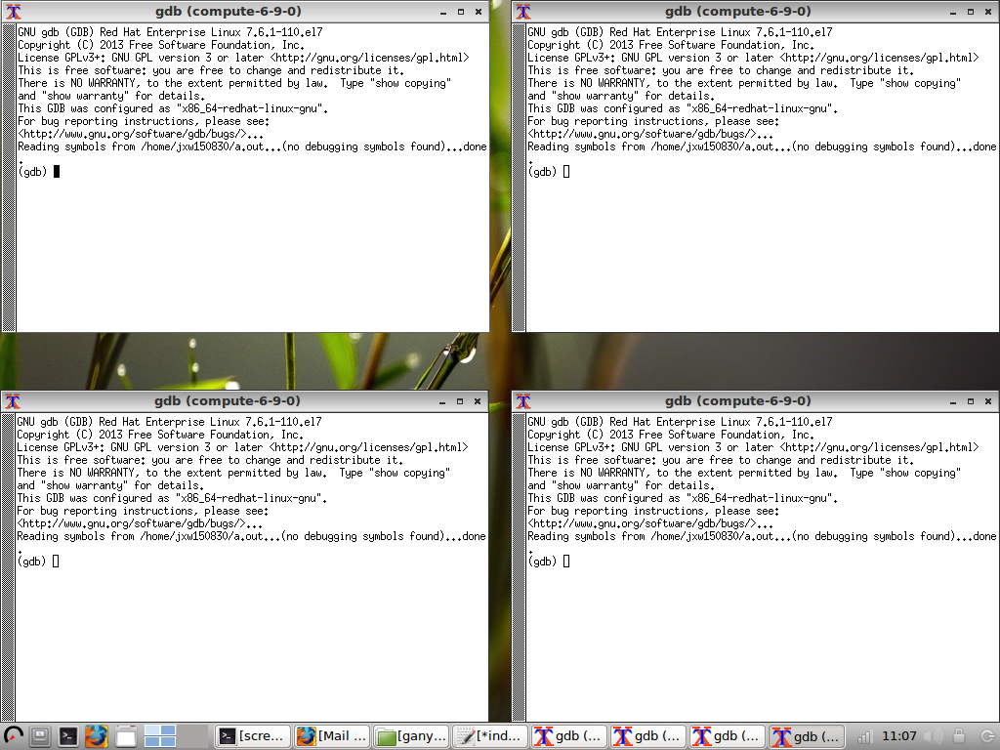

5 - Running Jobs on Ganymede¶
What is Slurm
Slurm is an open source, fault-tolerant, and highly scalable cluster management and job scheduling system for large and small Linux clusters. Slurm requires no kernel modifications for it’s operation and is relatively self-contained. Slurm has a centralized manager to monitor resources and work. There may also be a backup manager to assume those responsibilities in the event of failure.
5.1 - Preparing to Queue a Task¶
Before the user can queues a task, the user should check and see the status of cluster. This is done by running the command sinfo. By doing this, the user can see what resources are available.
[jxw150830@ganymede ~]$ sinfo
PARTITION AVAIL TIMELIMIT NODES STATE NODELIST
debug up 2:00:00 2 idle compute-6-9-[0-1]
normal* up 4-00:00:00 4 down* compute-7-2-[14,16],compute-7-6-[23,25]
normal* up 4-00:00:00 50 alloc compute-6-9-[2-39],compute-7-2-[0-2,10-13,15,17-20]
normal* up 4-00:00:00 40 idle compute-7-2-[3-9,21-39],compute-7-3-[32-39],compute-7-6-[24,26-30]
In the example above, there are 96 nodes in the cluster. The different states describe the nodes. The nodes that are alloc are currently running tasks and are unavailable at this time. The nodes that are idle are available to be used and the nodes that are down are down for service or because of an error. Currently, if the user were to schedule a task, the idle nodes would be used first to process the queued task. If all of the nodes are allocated, then Slurm steps in and will queue the job and process it as resources become available.
It is worth noting there are currently 2 debug nodes that allow the user to compile software and to test out the code that is to be run on the main worker nodes. This means that the user can queue a process knowing that it will run instead of waiting for the queue to run their process only to find it does not work. Debugging/ Prototying should never be done on the normal nodes. The following is an example of a test script that the user user should following in debugging.
[jxw150830@ganymede Linux]$ cat chessjob.sh
#!/bin/bash
#SBATCH --ntasks=1
#SBATCH --time=00:01:00
#SBATCH --mail-user=jxw150830@utdallas.edu
#SBATCH --mail-type=ALL
#SBATCH -p debug
cd /home/jxw150830/scratch/stockfish-9-linux/Linux
./chessrun
[jxp180019@ganymede Linux]$
Line 1 is the required bash script setup. Line 2 sets of the number of cores, which should be 1 since all users can only access 2 debug nodes. The next line is the time to run, which is a minute. The amount of time should be long enough for to ensure that the program works, but no longer. In this case, a minute was enough to know that no errors had occured.
5.2 - Queuing a Task¶
Now that you have done the preoperative tasks, it is time to queue a task. To queue a task with Slurm, the request should be submitted as a shell script. A number of attributes that are Slurm directives need to be established in order to queue the job. There are two major types of tasks, serial and parallel.
5.2.1 - Serial Task¶
The following is a simple serial task template for the operating script.
[jxw150830 ~]$ cat job.serial
#!/bin/bash
#SBATCH -J test # Job name
#SBATCH -o job.%j.out # Name of stdout output file (%j expands to jobId)
#SBATCH -N 1 # Total number of nodes requested
#SBATCH -n 1 # Total number of mpi tasks requested
#SBATCH -t 01:30:00 # Run time (hh:mm:ss) - 1.5 hours
# Launch serial code
echo "this is serial code"
sleep 10
In the example above the user submitted a job named job.serial. It will send the user an email when the job starts and finishes. The job is submitted to 1 compute node and asked for 1 core in that node. If the user requires more cores, more nodes may be used (ex: user requests 35 cores @ 16 cores per node, they get 3 nodes.) The output of the program will go to job.<JobID>.out file. While this choice is arbitrary, if the user intends to export these to Windows, the best file output would be .txt . When the user submits the job, this file will be created for the user in their home directory. The choose partition normal and the user’s account is jxw150830. Note that the partition name is case sensitive. The optional command sleep 10 is used just for example purposes. It says wait another 10 seconds before ending the job. For a complete listing of slurm commands, see Appendix B - Slurm Commands.
5.2.2 - Parallel Tasks¶
Parallel tasks use mpi technology to run multiple tasks at a time. The script to submit an MPI script is similar to the serial, but there are some differences.
[jxw150830 ~]$ cat job.mpi
#!/bin/bash
#SBATCH -J test # Job name
#SBATCH -o job.%j.out # Name of stdout output file (%j expands to jobId)
#SBATCH -N 2 # Total number of nodes requested
#SBATCH -n 16 # Total number of mpi tasks requested
#SBATCH -t 01:30:00 # Run time (hh:mm:ss) - 1.5 hours
# Launch MPI-based executable
prun ./a.out
Once the user has set up the file, the user can submit the job to the Slurm batch that will apply to the system using sbatch.
[jxw150830 ~]$ sbatch job.serial
Submitted batch job 405
This informs the user of the job number. The user will also receive an email from slurm@ganymede.utdallas.edu informing that the job has started. If the user ever forgets the job number, or has logged into Ganymede to determine if and which jobs are running, the user can type the command squeue -u $USER. This will show all current running tasks to the user, with the first number being the Job ID.
[jxw150830 ~]$ squeue -u $USER
JOBID PARTITION NAME USER ST TIME NODES NODELIST(REASON)
405 normal test jxw15083 R 0:01 1 compute-7-2-21
If the user runs squeue without the additional command, the queue total queue for the cluster will be displayed.
5.3 - Checking on a Running Task¶
Once the task is running, the user may want to check on the progress of the task. This can be done by using the command sstat --format=AveCPU,AvePages,AveRSS,AveVMSize,JobID -j <JobID>.
[jxw150830 ~]$ sstat --format=AveCPU,AvePages,AveRSS,AveVMSize,JobID -j 405
AveCPU AvePages AveRSS AveVMSize JobID
---------- ---------- ---------- ---------- ------------
00:00.000 0 362K 4372K 405.0
For those interested in very detailed analysis, running the command scontrol show job --d <JobID> with the job number will give the user a listing that is very specific about how the job is being executed.
[jxw150830 ~]$ scontrol show job --d 405
JobId=405 JobName=test
UserId=jxw150830(532471) GroupId=oithpc(1100) MCS_label=N/A
Priority=4294901737 Nice=0 Account=(null) QOS=(null)
JobState=COMPLETED Reason=None Dependency=(null)
Requeue=1 Restarts=0 BatchFlag=1 Reboot=0 ExitCode=0:0
DerivedExitCode=0:0
RunTime=00:00:10 TimeLimit=01:30:00 TimeMin=N/A
SubmitTime=2018-05-31T16:06:29 EligibleTime=2018-05-31T16:06:29
StartTime=2018-05-31T16:06:29 EndTime=2018-05-31T16:06:39 Deadline=N/A
PreemptTime=None SuspendTime=None SecsPreSuspend=0
LastSchedEval=2018-05-31T16:06:29
Partition=normal AllocNode:Sid=ganymede:449124
ReqNodeList=(null) ExcNodeList=(null)
NodeList=compute-7-2-21
BatchHost=compute-7-2-21
NumNodes=1 NumCPUs=16 NumTasks=1 CPUs/Task=1 ReqB:S:C:T=0:0:*:*
TRES=cpu=16,node=1,billing=16
Socks/Node=* NtasksPerN:B:S:C=0:0:*:* CoreSpec=*
Nodes=compute-7-2-21 CPU_IDs=0-15 Mem=0 GRES_IDX=
MinCPUsNode=1 MinMemoryNode=0 MinTmpDiskNode=0
Features=(null) DelayBoot=00:00:00
Gres=(null) Reservation=(null)
OverSubscribe=NO Contiguous=0 Licenses=(null) Network=(null)
Command=/home/jxw150830/job.serial
WorkDir=/home/jxw150830
StdErr=/home/jxw150830/job.405.out
StdIn=/dev/null
StdOut=/home/jxw150830/job.405.out
Power=
If at any time the user wants to cancel a job, the user should execute scancel <JobID>.
[jxw150830 ~]$ sbatch sampletask.sh
Submitted batch job 380
[jxw150830 ~]$ scancel 380
[jxw150830 ~]$
If there are no issues, there will be a clean output in the terminal and the job will disappear from the queue.
5.4 Debugging MPI with Slurm and gdb¶
When the user is running a MPI task, it is important to debug properly. Because the amount of data that can be dumped is greater than the quota for the home directory, special care must be taken in order for the user to sucessfully fix code. The user needs to first ssh into Ganymede using the following command:
jwhite-swift@hpc-rca:~$ ssh -X jxw150830@ganymede.utdallas.edu
jxw150830@ganymede.utdallas.edu's password:
Last login: Tue Jun 5 10:26:09 2018 from 10.21.4.24
Disk quotas for user jxw150830:
==================== ============ ================ ============
Disk Usage Soft Limit Hard Limit
==================== ============ ================ ============
/home/jxw150830 8248K 20000M 30000M
==================== ============ ================ ============
[jxw150830 ~]$
Note that the command is ssh -X <NetID>@ganymede.utdallas.edu. The -X allows the user to pass visual windows back through, which will become important later.
Once logged into Ganymede, the user must first get a reservation on a debug compute node.
[jxw150830 ~]$ salloc -p debug -N1 -n4 --time=00:30:00
salloc: Granted job allocation 620
Disk quotas for user jxw150830:
==================== ============ ================ ============
Disk Usage Soft Limit Hard Limit
==================== ============ ================ ============
/home/jxw150830 8248K 20000M 30000M
==================== ============ ================ ============
[jxw150830 ~]$
This command asks for 1 node and 4 cores on the node in the debug partition for 30 minutes. The number of cores can be adjusted as required.
To find out the current user’s node, the user then inputs showq –u.
[jxw150830 ~]$ squeue -u $USER
JOBID PARTITION NAME USER ST TIME NODES NODELIST(REASON)
620 debug bash jxw15083 R 4:55 1 CNChapter5.4
Then the user will ssh into that node and turn on X forwarding, just as the user did when accessing the Ganymede node to begin with.
[jxw150830 ~]$ ssh -X CNChapter5.4
Warning: Permanently added 'CNChapter5.4,10.182.224.70' (ECDSA) to the list of known hosts.
[jxw150830@CNChapter5.4 ~]$
Now that the user is on the debug node, the user needs to run the following command: mpirun -np 4 xterm -e gdb <my_mpi_application>
This will then produce 4 screens (or the number specified by np) that allow the user to debug each of the instances that are running using MPI, without having to core dump extremely large files
In order for this to work, the user needs to be running some form of an X server locally. If the user is on a linux machine, this functionality will be out of the box. If you are on a Mac, you’ll need XQuartz. If you are on a windows machine, you should use MobaXterm. These programs are discribed in Section 1 - Connecting to Ganymede.
5.5 - Running Interactive Jobs¶
Interactive Jobs can be run by the user on the individual compute nodes. This is done by running a slurm command that places the user onto a compute node or nodes. This then allows a user to run commands on the compute nodes.
5.5.1 - Running One-Time Instance Jobs¶
If the user is interested in only running for the instance in the compute node (i.e. logged off when the session is finished, then the user should use srun.
[jxw150830 ~]$ srun -n1 -N1 --pty /bin/bash
[jxw150830 ~]$
The user is now logged into the compute node. Notice that the -n1 denotes 1 task (or CPU) and the -N1 denotes 1 node is being used. The rest of the command sets up the machine to be interacted with. If the node is currently in use, the user will be placed in a queue and the command will hang until the user is granted access. Once the user has finished using the resources, the user needs to type exit to exit the compute node.
[[jxw150830] ~]$ exit
exit
[jxw150830 ~]$
Once executed, the session is closed and the user moves back to the Ganymede node.
5.5.2 - Running Persistent Jobs¶
If the user is interested in running a task that can needs to be logged in and out of multiple times, the user should allocate some time on a node or nodes using salloc.
[jxw150830 ~]$ salloc -n1 -N1 -t 1:00:00
salloc: Granted job allocation 607
Disk quotas for user jxw150830:
==================== ============ ================ ============
Disk Usage Soft Limit Hard Limit
==================== ============ ================ ============
/home/jxw150830 7420K 20000M 30000M
==================== ============ ================ ============
[jxw150830 ~]$
The user in this example allocated -n1 for 1 processor and -N1 for 1 node. The -t 1:00:00 sets the allocation to 1 hour. Now that the user has allocated the node, the user needs to find the compute node number by running squeue.
[jxw150830 ~]$ squeue -u $USER
JOBID PARTITION NAME USER ST TIME NODES NODELIST(REASON)
607 normal bash jxw15083 R 3:46 1 CNChapter5.5.5
Now that the compute node number is known, the user can ssh into the node to work. Note: users can only ssh into nodes that have been allocated for them.
[jxw150830 ~]$ ssh CNChapter5.5.5
Warning: Permanently added 'CNChapter5.5.5,10.182.224.72' (ECDSA) to the list of known hosts.
[jxw150830@CNChapter5.5.5 ~]$
Now that the user is in the node, the user is free to come and go to do work for the duration of the allocation.
[jxw150830@CNChapter5.5.5 ~]$ exit
logout
Connection to CNChapter5.5.5 closed.
[jxw150830 ~]$ ssh CNChapter5.5.5
[jxw150830@CNChapter5.5.5 ~]$
5.5.3 - Logging into a Particular Node¶
There are times when it is advantageous for the user to work on a particular node. This may be for a particular scipt or some other program that is loaded on a particular set of nodes, or to use the particular node because of hardware. To do this, the user must us the command salloc -w <computenode>. If the node is free, the user will encounter the following output:
[jxw150830 ~]$ salloc -w CNChapter5.5.3
salloc: Granted job allocation 611
Disk quotas for user jxw150830:
==================== ============ ================ ============
Disk Usage Soft Limit Hard Limit
==================== ============ ================ ============
/home/jxw150830 7424K 20000M 30000M
==================== ============ ================ ============
[jxw150830 ~]$ ssh CNChapter5.5.3
Warning: Permanently added 'CNChapter5.5.3,10.182.224.204' (ECDSA) to the list of known hosts.
[jxw150830@CNChapter5.5.3 ~]$
and if the node is in use, the user will see:
[jxw150830 ~]$ salloc -w compute-6-9-3
salloc: Pending job allocation 608
salloc: job 608 queued and waiting for resources
The user will then have to wait until the node becomes available.
5.6 - Viewing Results¶
Once the job is done, the user will receive an email from slurm@ganymede.utdallas.edu alerting the user that the job has been completed. Any interaction between the user and the nodes that the user were logged into will be be closed and the user will be returned to the home folder. The file will be in that directory. If there are any errors that occur, those will be captured in the output file that is created by the system. This is especially useful when running on the debugging nodes.
[jxw150830 ~]$ ls
html job.405.out job.mpi job.serial sampletask.sh scratch
[jxw150830 ~]$ cat job.405.out
this is serial code